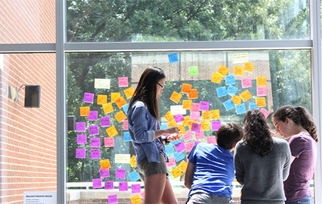
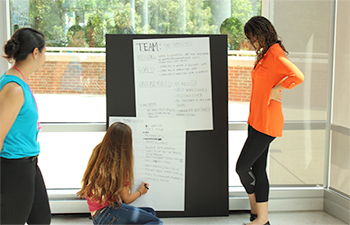
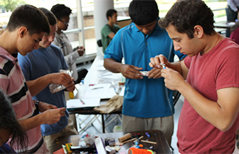

Atin Mittra, a University Innovation Fellow from the University of Maryland, helped facilitate the first I-Corps for Young Innovators camp for high school juniors. During the two week workshop, Mittra learned just as much from his students as they did from him.

By Atin Mittra, University Innovation Fellow, University of Maryland College Park
Excited students scurried into Blaire Hall early on a warm Monday morning in July. For many of them, the next two weeks would be their first touch point in innovation and entrepreneurship. The participants transcended the titles of "student" and "teacher"; they were active and engaged learners who discovered the most important lessons by trying, failing, and trying again.
The first "I-Corps for Young Innovators" camp took place at Bullis High School in Potomac, Maryland to teach high school students the foundation of venture creation and analysis. Teams of three or four came in with a venture idea, which they were to flesh out and analyze through the duration of the camp.
Organized by DC I-Corps, the Academy for Innovation and Entrepreneurship at the University of Maryland, and Bullis High School, the camp brought together design thinking and Lean LaunchPad experts from throughout the region including UMD, George Washington University, and Georgetown University. As a newly hired innovation specialist with the Academy, my role was to observe and participate in facilitation to prepare myself to teach in various UMD classes in the fall.
The forty high school juniors from schools in Maryland and Virginia came with a diverse set of interests and backgrounds, creating an ideal ideation soup from which fertile ideas came to life.
While the potential to impact these students was high, the challenge was also substantial. For the students, it meant wrapping their heads around concepts like customer segmentation, value proposition, sales channels, and iterative design while their peers were off enjoying the jovial days of summer freedom. For the facilitators, it meant simplifying seemingly complex topics without diluting the core principles.

Customer Discovery
I noticed in customer discovery, most of the campers were hard pressed to define a target demographic without using age. This was a concept we needed for them to abandon. We realized that until a student is out of college, most of their community is segregated by age. Because of this, many popular products or services they use are targeted to their age group. We emphasized shared values being the glue that brought a customer segment together and not age; however that people of the same age might share similar values. This distinction created a paradigm shift for the campers who were better able to determine their customers moving forward.
Strengths of Younger Students
Young adults can often be underestimated. Youth might be associated with a lack of worldly experience or a perceived disposition to navigate large systems. This naivety might be seen as a weakness, but we validated it was most certainly a strength. The first segment of design thinking is empathy. This stage pushes people to get out of their comfort zone and interview potential end users. In his 2010 TED talk “The Marshmallow Challenge,” Tom Wujec chronicles a design exercise that asks teams to build a tower with uncooked spaghetti and tape and to fix a marshmallow on top. He found through facilitating the challenge that kindergarteners spend less time planning and more time trying ways to accomplish the task ultimately creating a better tower than MBA students, who spent the majority of their time planning.
We found this same principle to hold true at Bullis. Erica Estrada-Liou, Director of Curriculum & Student Experience at the Academy for Innovation and Entrepreneurship, led the design thinking facilitation during the camp. She was pleasantly surprised that “these students weren’t afraid to go and talk to people. They even talked to more people than industry professionals. They are okay talking to strangers.” The ability to reach out to people to test assumptions and find needs is of paramount importance to venture creation, an ability which these students had no trouble exercising. It seemed that the lack of experience allowed the campers to be more open to learning than their elder counterparts.
Failure is Relative
I graduated from college a few short months ago and am currently working for the university, so I have seen both sides of the behemoth called higher education. As a result, I feel I can speak to the tremendous aversion to failure education instills in students. This idea that failure is the worst possible outcome to an endeavor is the polar opposite to the entrepreneurial world where failure is an important learning experience, which should not be feared. While there is a growing movement in the country around entrepreneurship and an increased need to provide millennials skills to tackle the world’s problems, such efforts will be futile until the day failure is no longer a dirty word.
At Bullis, we found the group initially asking for rules and a rubric for which to base their ventures upon. In order to fully understand the process we were teaching, it was necessary for the campers to understand how to exercise autonomy with their ideas and not operate under rigid guidelines. Part of this autonomy included the ability to completely change their mind at anytime if they felt unsatisfied with their venture. Pivoting is a natural process in entrepreneurship and one which we wanted groups to understand was far from failure. Yasmin Mulla, a 16-year- old rising senior at Winston Churchill High School, reflected on the camp: “One of the most unique aspects about I-Corps was that they taught us to embrace our failures and (that) it’s a very significant part of the process…(Failing) can help you create better solutions, come up with better ideas, or influence you to pivot- which is perfectly alright!”

After each enlightening day, I’d lay my head down and close my eyes only to notice that customer segmentation and value proposition were branded deep into my neurons. The camp in some ways was even the impetus for me to make the decision to narrow the target audience for my own venture, MADE. While these students gained empathy for their customer segment to launch their businesses, we gained empathy on what engaged them in order to better teach innovation and entrepreneurship. The versatility of the applications of both design thinking and Lean LaunchPad are seemingly limitless. It can be used to teach people to start a business and it can be used to teach people how to teach people how to start a business.
The Young Innovators Camp was a step in the right direction. It was an initiative that should try to be emulated in order to better equip the students of tomorrow to view education differently and create a demand for a change in the aging education model. It was surreal teaching students about innovation and entrepreneurship. What I’ve come to realize is that students can pick this stuff up pretty quickly; it’s all in the attitude of the teacher. That may sound cliché, but its true. It all depends on the facilitator’s mindset going into it. We believed we could effectively teach this material to sixteen year olds, and we did just that.
In order for students to have unique and disruptive ideas, they must be introduced to unique and disruptive thinking. Why not introduce the mindset while teaching tools to help them bring their ideas to life? You’re not only teaching steps and process, you’re teaching framing and critical thinking. And don’t forget, even though you might have a syllabus at hand, you should listen to the students' needs. After all, as a teacher, they are your customer segment.
 Atin Mittra graduated from the University of Maryland, College Park in 2014 with a degree in in Aerospace Engineering and a minor in Technology Entrepreneurship. He is passionate about social entrepreneurship and understanding social trends. Atin is also the Founder and Executive Director of MADE, a non-profit that provides peer driven financial literacy for college students to make the topic mentally accessible.
Atin Mittra graduated from the University of Maryland, College Park in 2014 with a degree in in Aerospace Engineering and a minor in Technology Entrepreneurship. He is passionate about social entrepreneurship and understanding social trends. Atin is also the Founder and Executive Director of MADE, a non-profit that provides peer driven financial literacy for college students to make the topic mentally accessible.